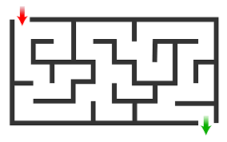
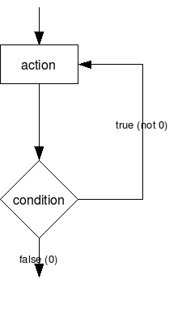

Starting Out
  |
|
Aims
- Understand Importance of Clarity
- Sequences and Operations
- Describe a Program
Reuse

This work is licensed under a Creative Commons Attribution-NonCommercial-ShareAlike 4.0 International License.
http://creativecommons.org/licenses/by-nc-sa/4.0/deed.en_USThis means you are free to copy and redistribute the material and adapt and build on the material under the following terms: You must give appropriate credit, provide a link to the license and indicate if changes were made. If you adapt or build on the material you must distribute your work under the same license as the original.
Note that this presentation contains images owned by others. Please seek their permission before reusing these images.
A Cup of Tea
Write down the instructions for making a cup of tea

Making a cup of tea
- milk
- tea bag
- sugar
- water
- cup
- kettle
- get the kettle
- put some water in it and switch in on
- put the tea bag in the cup
- pour the water in the cup
- pour some milk
- add some sugar
- take the tea bag out
- stir
Why?
There are a set of steps to follow for making a cup of tea.
A recipe - in computing, science and maths recipe isn't the word used.
The term algorithm is used.
Algorithm
An alogrithm is a set of steps to follow to accomplish a task.
These form the basis of a program for a computer.
Often written in pseudo-code.
Reading an Algorithm
Look at the instructions of another person.
How similar are the sets of instructions?
Can you understand them?
Important - there can be multiple approaches to a problem.
A New Problem - Navigation
A New Problem - Navigation
On the worksheets there is a straight line corridor to move your person down.
Write down a set of instructions to move your person down the corridor.
Note that the pit is bottomless and if the person lands on it they fall forever.
Now get another person to try your instructions.
Problems
Were there any problems?
- Language
- Actions
- Knowledge
- Timing
Pseudo-Code
The steps of a program are written in a more accessible language (like English).
It is used to detail how a program or part of a program should operate.
Often used in design and preparation.
Pseudo-Code
There is no standard for pseudo-code.
It may not replicate all aspects of actual code.
It is for people not computers.
A Quote
"Any fool can write code that a computer can understand. Good programmers write code that humans can understand."
Attributed to Martin Fowler - a respected British software engineer.
Write programs so that other people can understand them.
Actions
To make the navigation easier - lets create a set of standard steps called actions.
What actions should we have?
Actions
Some sample actions
- Walk 1 Space
- Run 2 Spaces
- Jump Over 1 Space
Rewrite your instructions using these actions.
A Working Set?
You now have a working set of instructions.
Will they always work?
What happens if the position of the pit changes?
Changing Circumstances
Up to now your person follows your instructions.
You have complete knowledge of what will happen and the layout of the corridor.
This rarely happens.
We often have to make choices.
Choices

Choices
The simplest choice can be written as:
IF condition THEN do this ELSE do this other thing
Examples:
IF it is raining THEN put up umbrella
IF cup of tea is too hot THEN let it cool ELSE drink the tea
Choices and Knowledge
To make a choice we need to evaluate something we can observe or know about.
What could we add as actions to the person for our instructions?
New Actions
- Look Ahead 1 Space - Gives information (Is there a pit or solid ground?)
- Determine Next Action (IF THEN)
Rewrite your instructions using these actions.
Try making up new corridors with different pit locations.
Different Lengths
What happens if the length of the corridor changes?
Continuation
Sometimes we have to keep going until a problem is done.
Maybe we don't know the length of the problem or it may change.
So we have to repeat actions.
Loops
Loops
Loops allow us to repeat a set of actions until we reach a goal.
This means we can check a condition like a choice.
There are different types of loop.
Loops - Pseudo-Code
Writing a loop in pseudo-code:
- WHILE condition is met:
- Actions
Example:
- WHILE kettle is not boiled:
- Wait and Twiddle Thumbs for 5 seconds
Adding Loops In
We could surround other actions with the loop making it the "main" entry to the steps.
So we could make this an action - Find Exit.
Try adding a loop to your instructions - and try changing the length of the corridor
A More Complicated Version
So far, we have looked at straight lines, lets put in some corners.
The second corridor has two corners in it.
Can you write a set of instructions using the actions for this one?
A More Complicated Version
What new actions will we need?
New Actions
We will need to add or update actions:
- Look Ahead 1 Space - Gives information (Add new response - wall)
- Determine Next Action (what happens if there is a wall?)
- Turn Left 90
- Turn Right 90
Can you follow each others instructions?
Try using each others instructions to move through the corridor.
Then try making a new corridor and see if it still works.
Should we add in anything else?